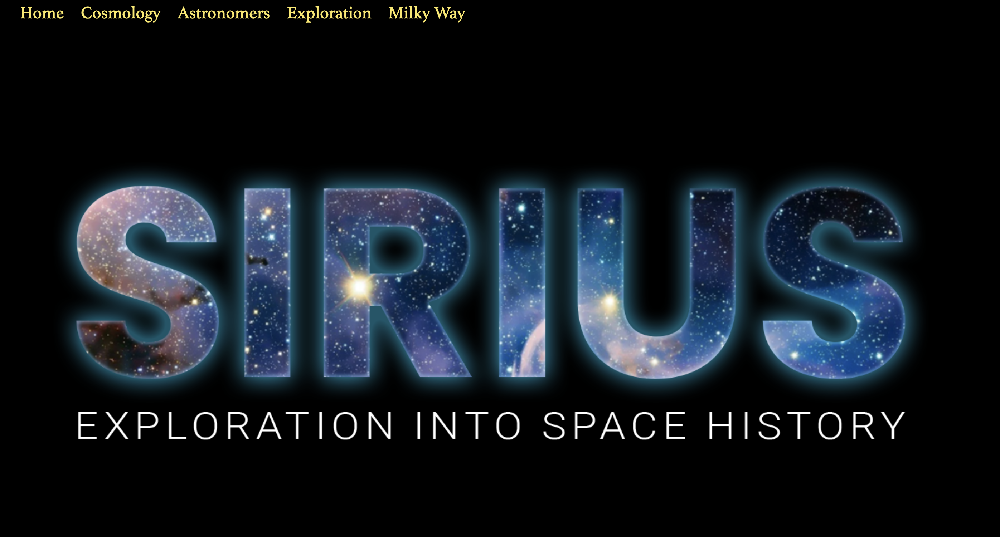

Project Overview
A space-learning website with a news-reading interface. Sirius brings astronomy topics and space exploration into a shared visual system, then adds a feed for discovering stories from external publishers.
Project type — Educational content and editorial web experience. Work shown — Site-specific content organization, responsive interface development, navigation, and news-feed implementation on an Eleventy/Sass starter foundation. Technology — Eleventy, Nunjucks, Markdown, Sass, and client-side JavaScript; the repository also contains an RSS aggregation function for Netlify.
The live portfolio destination is hosted on Vercel. Its static pages and news interface load, while the Netlify-style function route returns 404 on that host. The case study distinguishes that deployment limitation from the feed logic present in the source.

The Problem
An educational site needs to help visitors move between broad concepts, historical figures, and exploration topics without losing their place. A news page adds another task: recognizing the subject, date, and origin of an external story.
The product challenge was to connect structured learning content with a changing feed, while keeping navigation and reading patterns consistent across screen sizes.
External content also creates a reliability constraint. A visually complete feed needs loading, unavailable, and fallback states as well as story cards. Current headline freshness cannot be inferred from the presence of the page.
Goals & Objectives
Organize exploration — Give space, the Milky Way, astronomers, exploration, cosmology, and news their own destinations in a deliberate order.
Create a consistent reading system — Reuse typography, page layouts, image treatments, and cards across topics.
Expose useful news context — Show story titles, source attribution, dates, and sorting controls, with links back to publishers.
Account for data dependencies — Define fallback behavior and make deployment assumptions explicit when describing the completed experience.
Research & Discovery
The README describes a space-themed Eleventy site with Sass styling, responsive layouts, and a live-news page. Source files establish its content categories, shared templates, navigation ordering, and feed behavior.
Git history identifies an Eleventy/Sass starter as the original foundation. My case study focuses on the site-specific changes visible in the project history and does not present the underlying starter as entirely original work.
No formal audience research or usability-test record was found. The intended reader tasks are inferred from the implemented content and controls. To complete — Add the original assignment or project brief, your precise responsibilities, and any collaborator or starter credits you want to emphasize.
Design Process
Information architecture — Page metadata assigns navigation order; a shared collection feeds both the desktop links and mobile menu. The same underlying list supports consistent destinations across screen sizes.
Visual hierarchy — Fraunces headings and Space Grotesk body text distinguish section titles from explanatory content. Dark surfaces, space imagery, accent colors, and repeated cards create a common presentation across the educational pages.
Responsive reading — Grids collapse at narrower breakpoints and content padding changes for smaller screens. A native details/summary control exposes the compact navigation. The source marks the current page and gives the menu and logo accessible names; no accessibility conformance audit is claimed.
News cards — The client renders a date, title, and named source for each story. A labeled select offers newest, oldest, title, and source sorting. The reader follows a source link to the publisher rather than reading a reproduced full article.
Feed states — The implementation defines a loading message, an unavailable message, a serverless feed request, a browser proxy attempt, and a bundled historical fallback. The available script loads when the page opens; it does not establish continuous background refresh.
AI-Assisted Workflow
To complete — Confirm whether you used AI tools on this project. If so, add the tool, a specific implementation or review task, the output you evaluated, your refinements, and the checks you performed. AI use documented for the museum project is not assumed to apply here.
Challenges & Iterations
Making page order explicit — Revision 82e0aa4 introduced navOrder-driven ordering and used the same collection for desktop and compact navigation. This turns navigation order into editable content metadata rather than an incidental file order.
Adding the news experience — The same revision added the news page, RSS aggregation function, client rendering, and sort controls. It connected a new content type to the existing visual system and external source links.
Adding a further fallback — Revision 3371090 added a bundled JSON fallback after the serverless and proxy attempts. This provides historical material when the request chain fails, but that material should not be described as current live reporting.
Refining narrow-screen presentation — Revision d73d881 added a compact-menu backdrop, adjusted mobile hero and object layouts, and moved responsive Sass after the component styles. These are recorded layout changes; there is no documented user-test result establishing their effectiveness.
Deployment boundary — The inspected Vercel destination serves the news page and bundled fallback, but not the Netlify function endpoint. A future iteration should verify a compatible backend route and the freshness of rendered results. This portfolio update does not change the Sirius application.
Final Solution
The live site presents its topic pages through shared navigation and consistent educational layouts. The Space News page contains a loading region and sorting interface, with the client-side request and rendering logic included in the deployment.
Live-feed availability is not claimed: the backend route returned 404 during review, and the browser fallback chain was not visually exercised. The packaged fallback contains historical stories.
To complete — Add current screenshots of a topic page, the mobile navigation, and the news interface in populated and unavailable states. Include a recording of sorting only after confirming it in the deployed experience.
Outcomes & Reflection
Delivered — A deployed educational website with shared templates, explicit navigation order, responsive topic layouts, and a news-feed interface with multiple data-loading paths.
The project highlights that an editorial interface depends on more than card styling. Source attribution, dates, loading behavior, data freshness, and hosting compatibility are part of the reading experience.
No audience-growth, engagement, or learning-outcome improvement has been measured for this case study. The next evidence to gather is whether readers can navigate between topics, understand story sources, and recognize stale or unavailable news.
To complete — Add your personal reflections on adapting the starter, the feed implementation, and the decisions you would change in the next version.